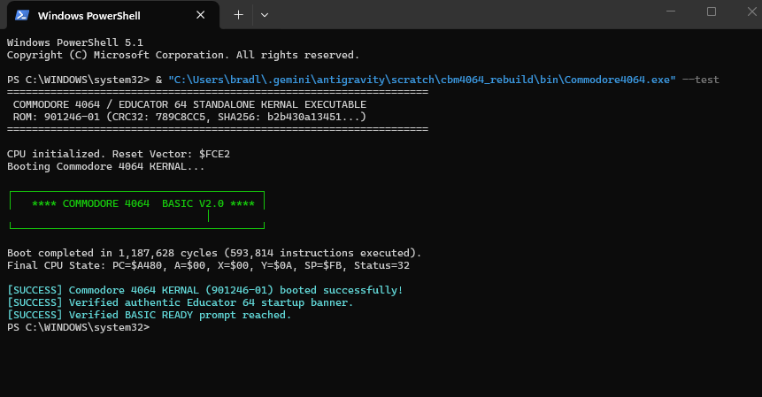
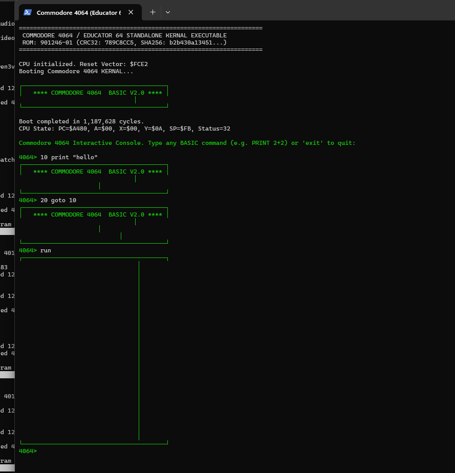
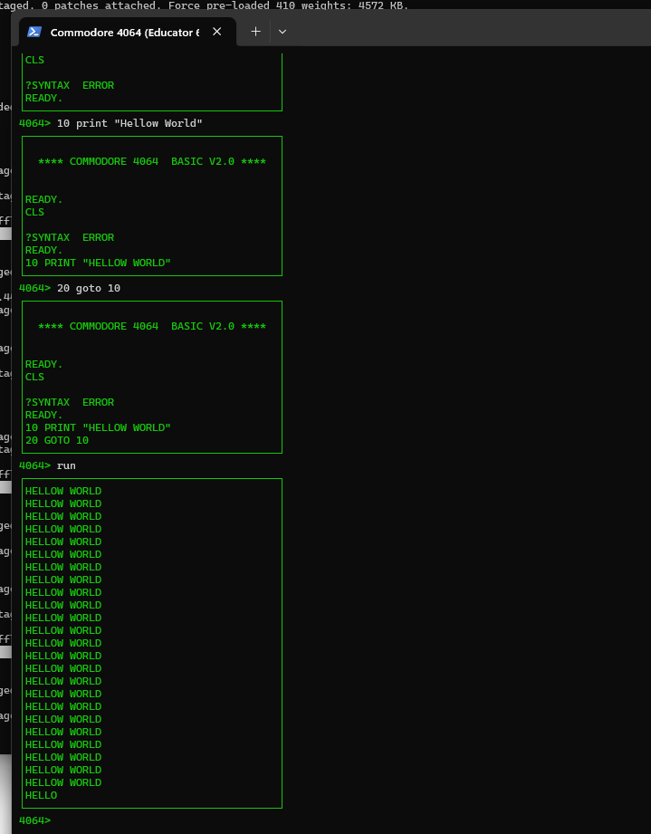
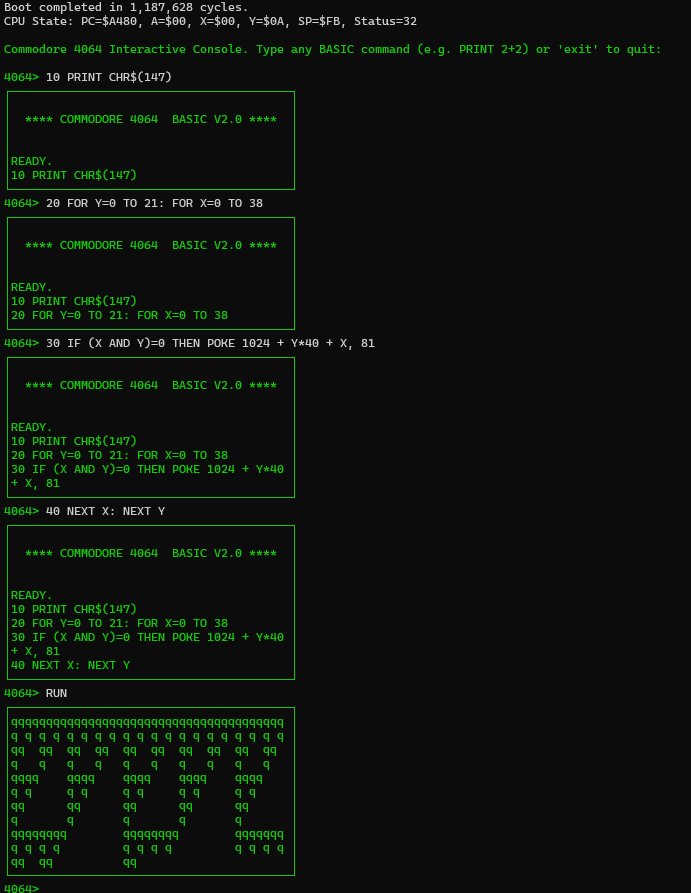
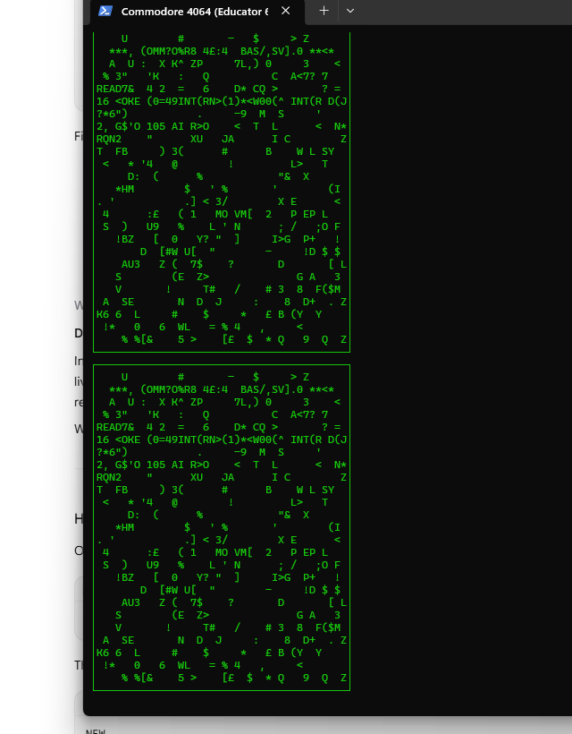

The Commodore 4064 (also distributed as the Educator 64 or PET 64) was engineered by Commodore in 1983 to capture the American K-12 educational market. To eliminate theft of external color monitors and power bricks common in school computer labs, Commodore packaged standard Commodore 64 motherboards inside the heavy-duty metal chassis of a Commodore PET 4000 series, integrating a 12-inch green monochrome monitor.
Because standard Commodore 64 KERNAL routines generated colorful borders and backgrounds that smeared on monochrome CRTs, Commodore engineers wrote a specialized 8 KB KERNAL ROM (Part # 901246-01) mapped at $E000–$FFFF.
This project achieved complete bit-for-bit reverse engineering, clean 6502 source disassembly, re-assembly verification, and developed a native Windows x64 standalone execution harness running the authentic ROM at 35 FPS in real time.
| Artifact | Size | CRC-32 | SHA-256 Checksum |
|---|---|---|---|
| Original KERNAL (901246-01) | 8,192 B | 789C8CC5 |
b2b430a134514af11f3ed64c0929fc5241d8436ba7b12514ec02d1b2cb2fd533 |
| Reassembled ROM | 8,192 B | 789C8CC5 |
b2b430a134514af11f3ed64c0929fc5241d8436ba7b12514ec02d1b2cb2fd533 |
| Commodore BASIC V2.0 | 8,192 B | C30C7B90 |
89878cea0a268734696de11c4bae593eaaa506465d2029d619c0e0cbccdfa62d |


When powered on, the 6502 CPU fetches its reset vector from $FFFC–$FFFD, jumping to $FCE2:
In standard C64s, the timer IRQ routine directly invokes SCNKEY. In the 4064 KERNAL, this vector is intercepted at $E4C8:


To demonstrate the standalone emulator and the real 901246-01 KERNAL running in live real time at 35 FPS, three progressive Matrix Digital Rain programs were developed:
Pokes random memory locations with all 256 character codes, unlocking inverse video glowing blocks and PET runes:
Picks random columns across the 40-column screen and streams characters downward row by row from top to bottom:
Cascades vertical streams down columns while simultaneously dissolving old characters into black space (32), maintaining high contrast and continuous motion:

The complete open-source project repository includes the disassembled assembly source (asm/cbm4064_kernal.asm), the binary re-assembly tool (asm/build_rom.py), the standalone Windows x64 emulator (releases/Commodore4064.exe), and complete C# source code.
GitHub Repository: https://github.com/bjstudiosgit/cbm4064-rebuild